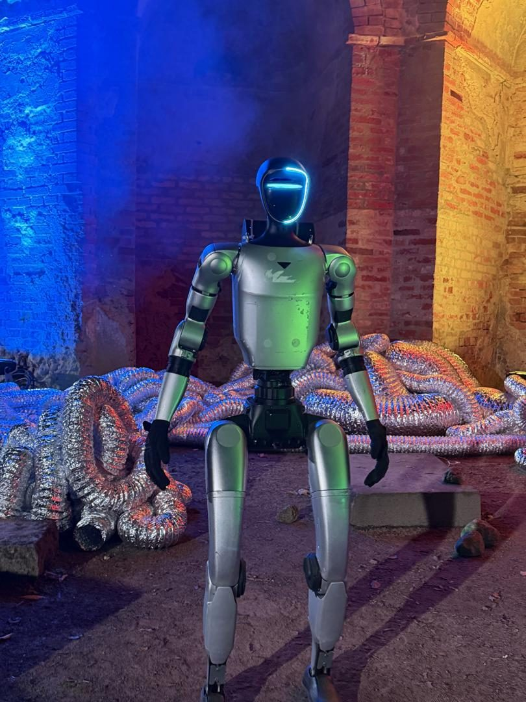

- Startseite
- Eventratgeber
- Freie Trauung
Hochzeit · Freie Trauung · Kosten
Freie Trauung: Ablauf, Kosten, Rituale und Ideen
Eine freie Trauung erzählt die Geschichte des Paares — an einem Ort und auf eine Weise, die es selbst wählt. Hier lesen Sie, wie die Zeremonie abläuft, was Trauredner und Location kosten, welche Rituale es gibt und was Sie rechtlich beachten müssen.

Was eine freie Trauung ist
Eine freie Trauung ist eine Hochzeitszeremonie, die nicht nach den Regeln einer Kirche oder Religionsgemeinschaft abläuft. Meist leitet sie eine freiberufliche Traurednerin oder ein Trauredner. Ort, Uhrzeit, Ablauf, Musik und Rituale bestimmt das Paar selbst — deshalb ist jede freie Trauung anders.
Rechtlich hat sie keine Wirkung: Verheiratet ist man in Deutschland erst nach der standesamtlichen Eheschließung. Viele Paare gehen deshalb einige Tage vorher im kleinen Kreis zum Standesamt und feiern die freie Trauung mit allen Gästen.
Ablauf der Zeremonie
| Ablauf | Dauer |
|---|---|
| Einzug der Gäste, Begrüßungsmusik | 10–15 Minuten vorher |
| Einzug des Paares oder der Braut | 2–3 Minuten |
| Begrüßung durch die Traurednerin | 3–5 Minuten |
| Die Geschichte des Paares | 10–15 Minuten |
| Musik oder Lesung von Freunden | 3–5 Minuten |
| Ritual | 3–5 Minuten |
| Eheversprechen, Ringtausch, Kuss | 5–10 Minuten |
| Auszug, Spalier, Gratulation | 15–30 Minuten |
Wie die Zeremonie in den ganzen Tag passt, zeigt der Ratgeber Hochzeit-Ablaufplan.
Was kostet eine freie Trauung?
| Posten | Preis laut öffentlichen Angaben |
|---|---|
| Traurednerin oder Trauredner | 800–2.000 € (Bridebook), 800–2.500 € (Trustlocal) |
| Aufschlag in Großstädten | etwa 20–30 % über dem Durchschnitt (Trustlocal) |
| Musik bei der Trauung | im Schnitt 999 € (Bridebook Wedding Report 2026) |
| Saxofon-Set, zum Beispiel für den Empfang | ab 150 € |
| Freie Trauung insgesamt, mit Location, Deko und Musik | 3.000–6.000 € (Bridebook) |
Im Honorar sind meist Kennenlerngespräch, Paarinterview, die individuell geschriebene Rede, Abstimmung des Ablaufs und die Zeremonie selbst enthalten. Fragen Sie nach Anfahrt, Probe, Tonanlage und ob eine zweite Sprache möglich ist.
Die richtige Traurednerin finden
- Kennenlernen. Ein Gespräch vorab zeigt, ob die Chemie stimmt — Sie vertrauen dieser Person Ihre Geschichte an.
- Stil. Humorvoll, emotional, feierlich oder locker? Videos von echten Trauungen sagen mehr als Texte auf der Website.
- Vorbereitung. Gute Rednerinnen führen ein ausführliches Paarinterview und fragen auch Familie oder Freunde.
- Sprache. Bei internationalen Gästen lohnt eine zweisprachige Zeremonie.
- Technik. Bringt die Rednerin ein Mikrofon mit? Draußen ist das Pflicht.
Rituale für die freie Trauung
- Sandzeremonie. Beide schütten Sand in verschiedenen Farben in ein gemeinsames Gefäß — die Farben lassen sich nie wieder trennen.
- Handfasting. Die Hände des Paares werden mit Bändern umwickelt, oft von Familie und Trauzeugen — ein altes Ritual, das sichtbar macht, was die beiden verbindet.
- Ringwärmen. Die Ringe wandern vor dem Tausch durch die Reihen, jeder Gast gibt einen stillen Wunsch mit.
- Weinzeremonie. Eine Flasche Wein und Briefe an sich selbst kommen in eine Kiste, die das Paar an einem Hochzeitstag öffnet.
- Kerzenritual. Zwei Kerzen entzünden gemeinsam eine dritte — die Hochzeitskerze.
- Baum pflanzen. Das Paar pflanzt gemeinsam einen Baum, oft mit Erde von beiden Elternhäusern.
- Wunschsteine. Gäste schreiben Wünsche auf Steine, die das Paar in einer Schale mitnimmt.
- Briefe an die Zukunft. Gäste schreiben Briefe, die das Paar zum ersten, fünften oder zehnten Hochzeitstag öffnet.
Location und Wetter
Beliebte Orte für die freie Trauung sind Gärten, Weingüter, Scheunen, Seeufer, Schlossparks und die Location der Feier selbst — dann entfallen Wege. Prüfen Sie vorab:
- einen Plan B bei Regen, Wind oder Hitze — Zelt, Pavillon oder Innenraum,
- Sitzplätze für ältere Gäste und Schatten im Sommer,
- eine Tonanlage, damit auch die letzte Reihe die Rede hört,
- den Sonnenstand: Gegenlicht ist schwierig für Fotos,
- Genehmigungen, wenn die Trauung auf öffentlichem Grund stattfinden soll.
Musik und Deko
Drei Musikstücke tragen die Zeremonie: zum Einzug, zum Ritual und zum Auszug. Live-Musik — Gesang mit Gitarre, Streichtrio oder Saxofon — macht diese Momente besonders. Kosten und Besetzungen im Ratgeber Hochzeitsband.
Für die Deko genügen oft ein Traubogen mit Blumen, ein gestalteter Gang, Schilder zur Begrüßung und Körbe mit Taschentüchern und Wunderkerzen oder Blütenblättern für den Auszug.
Freie Trauung und Standesamt
Die Reihenfolge ist frei: Viele Paare heiraten standesamtlich vorher, manche danach. Einige Gemeinden bieten Trauungen an besonderen Orten außerhalb des Standesamts an — dann können standesamtliche Trauung und Feier an einem Ort stattfinden. Fragen Sie bei Ihrem Standesamt nach den Möglichkeiten, Fristen und Gebühren; Beispiele für Gebühren finden Sie im Ratgeber Hochzeitskosten.
Nach der Zeremonie
Auf die Trauung folgen Gratulation, Sektempfang und Fotos. Damit die Gäste nicht nur warten, während das Paar beim Shooting ist, eignen sich Live-Musik, Rasenspiele, ein Close-up-Zauberer oder eine Fotobox — viele Ideen im Ratgeber Unterhaltung auf der Hochzeit.
Ein humanoider Roboter kann die Gäste schon vor der Zeremonie empfangen, für die ersten Fotos posieren und am Abend nach dem Eröffnungstanz tanzen. Ein ganzer Tag kostet ab 2.500 €, inklusive Operator und Anfahrt in ganz Deutschland — mehr unter Roboter zur Hochzeit.


Häufige Fragen
Bridebook rechnet für eine freie Trauung mit Gesamtkosten von 3.000 bis 6.000 €, inklusive Location, Deko und Musik. Den größten Einzelposten bildet meist das Honorar der Traurednerin oder des Trauredners.
Professionelle Traurednerinnen und Trauredner kosten laut Bridebook 800 bis 2.000 €, laut Trustlocal typischerweise 800 bis 2.500 €. In Großstädten wie München, Frankfurt oder Hamburg liegen die Preise laut Trustlocal etwa 20 bis 30 % über dem Bundesdurchschnitt.
Nach dem Einzug von Gästen und Paar folgen Begrüßung, die Rede mit der Geschichte des Paares, Musik oder Lesungen, ein Ritual, das Eheversprechen, der Ringtausch und der Kuss. Zum Schluss ziehen alle aus, oft durch ein Spalier der Gäste.
Meist 30 bis 45 Minuten. Mit Einzug, Gratulation und Gruppenfoto direkt danach sollten Sie etwa eine bis eineinhalb Stunden einplanen.
Nein. Rechtlich verheiratet ist man in Deutschland erst nach der standesamtlichen Eheschließung. Viele Paare heiraten deshalb einige Tage vorher im kleinen Kreis auf dem Standesamt und feiern die freie Trauung mit allen Gästen.
Beliebt sind Sandzeremonie, Handfasting, Ringwärmen, Weinzeremonie mit Briefen, Kerzenritual, das gemeinsame Pflanzen eines Baums und Wunschsteine der Gäste. Ein Ritual sollte zum Paar passen und nicht länger als fünf Minuten dauern.
Fast überall: im Garten, auf einem Weingut, in einer Scheune, am See, im Schlosspark oder direkt an der Location der Feier. Wichtig sind ein Schlechtwetterplan, Sitzplätze für ältere Gäste und eine Tonanlage, damit alle die Rede hören.